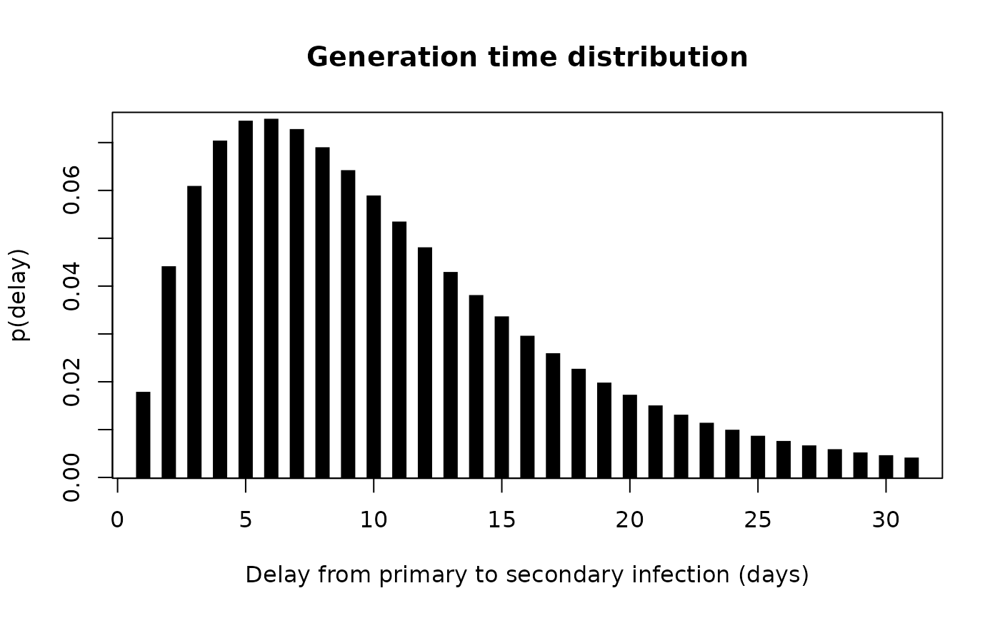

This function implements a contact-driven branching process outbreak
simulator. Outbreaks start with a single infection in an otherwise fully
susceptible population of size non the first time step. New cases are
generated at each time step by infectious individuals, with forces of
infection depending on the generation time distribution, individual
transmission rates, and contacts between individuals. The function returns a
linelist including both non-cases and cases, as well as a transmission tree
listing all transmission events in the shape of a data.frame with columns
from, to, and date. This function is user-facing; to use the simulacr
engine in another package, you may want to use the low-level function
[simulate_outbreak_step()].
Usage
simulate_outbreak(
n,
duration = 1L,
w = c(0, 1),
tau = 0,
contacts = NULL,
label_size = 6
)Arguments
- n
An
integerindicating the number of individuals in the population; no default.- duration
An
integerindicating the number of time steps to run the simulation for; defaults to 1L (i.e. only the initial infection is generated).- w
The probability mass function of the generation time distribution, as produced by
[make_pmf_delay()], specified as a numeric vector, a function, or adistcreteobject. Defaults to a point mass at 1 (i.e. all secondary infections take place exactly 1 time step after the primary infection).- tau
A numeric vector of length
ncontaining individual transmission rates; a single value will be recycled; defaults to 0 (no transmission).- contacts
Contacts between all individuals in the population. It can be specified in two ways: i) an n x n matrix where entries correspond to contact presence or intensities, or ii) a function with a single argument
t(time step) generating such matrix at each time step. IfNULL(default), we assume random-mixing in the population, i.e. all individuals are in contact at every time step.- label_size
An
integerindicating the length of the labels generated by[draw_labels()], used as unique individual identifiers. Defaults to 6.
Details
The force of infection (FOI) from individual \(i\) to \(j\) at time \(t\) is defined as:
\(\lambda_{t, i \rightarrow j} = I_{t,i} C_{t, i \rightarrow j} \tau_{t,i} w(t - T_i)\)
The total FOI experienced by individual at time is summed over all possible sources of infection: \(\lambda_{t, \bullet \rightarrow j} = S_{t,j} \sum_i \lambda_{t, i \rightarrow j} \)
It follows that individual \(j\) becomes infected at time \(t+1\) according to a Bernoulli distribution with probability: \( 1 - e^{-\lambda_{t, \bullet \rightarrow j}} \)
To keep track of chains of transmission, the infector of \(j\), denoted \(alpha_j\), is drawn from a Multinomial distribution weighted by the respective FOIs directed towards \(j\): \( \alpha_j \sim \mathcal{M}(1, \lambda_{t, 1 \rightarrow j} / \lambda_{t, \bullet \rightarrow j} ,\lambda_{t, 2 \rightarrow j} / \lambda_{t, \bullet \rightarrow j} , \ldots , \lambda_{t, N \rightarrow j} / \lambda_{t, \bullet \rightarrow j} ) \)
Author
Thibaut Jombart thibautjombart@gmail.com
Examples
## make a generation time distribution
gen_time <- make_pmf_delay(make_disc_gamma(10, 7))
plot(
gen_time(0:30), type = "h", lend = 2, lwd = 10,
main = "Generation time distribution",
xlab = "Delay from primary to secondary infection (days)",
ylab = "p(delay)"
)

## simulate an outbreak using random mixing
## (no contacts matrix provided -> all individuals are in contact by default)
set.seed(1)
res <- simulate_outbreak(
n = 100, # 100 individuals in the population
duration = 365, # simulate for a year
w = gen_time, # generation time distribution
tau = runif(100, 0.01, 0.05) # individual transmission rates, from 0.01 to 0.05
)
names(res)
#> [1] "linelist" "tree"
res
#> $linelist
#> # A tibble: 100 × 3
#> id casedef date_infection
#> <chr> <chr> <dbl>
#> 1 eLGzdD case 1
#> 2 8Tvbyj case 40
#> 3 MQ90i6 case 33
#> 4 RdzUUA case 25
#> 5 kSVCEa case 45
#> 6 Z42dvb case 32
#> 7 YWzVgb case 44
#> 8 EGjSAk case 31
#> 9 6rcYKS case 52
#> 10 VBW4HD case 51
#> # ℹ 90 more rows
#>
#> $tree
#> # A tibble: 96 × 3
#> from to date
#> <chr> <chr> <dbl>
#> 1 NA eLGzdD 1
#> 2 eLGzdD LjuhEd 13
#> 3 LjuhEd HmhA3k 17
#> 4 LjuhEd J98DE8 22
#> 5 HmhA3k Lwe2aP 22
#> 6 LjuhEd MOZ5Ca 22
#> 7 MOZ5Ca yKVg67 24
#> 8 HmhA3k knhTUJ 24
#> 9 J98DE8 3eZzb4 24
#> 10 Lwe2aP RdzUUA 25
#> # ℹ 86 more rows
#>
#> attr(,"class")
#> [1] "simulacr" "list"
plot(res)